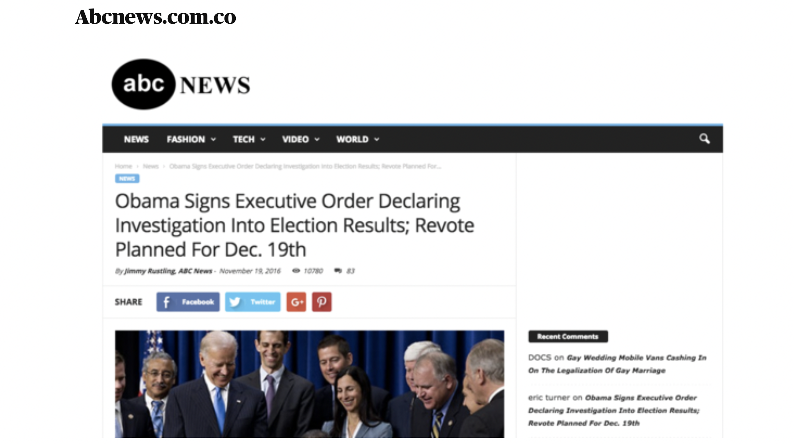
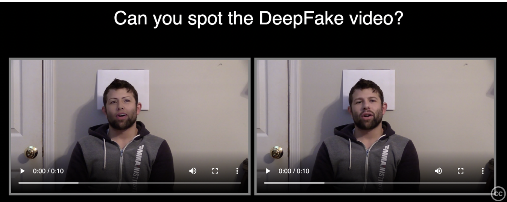

Types of Fake News
There are many different forms of fake news, some more dangerous than others. In a study carried out by Andrew Duffy, Edson Tandoc and Rich Ling in 2019 called
"'Too good to be true, too good not to share: the social utility of fake news'" , they asserted that different forms of fake news can be assessed based on
"two dimensions" , of which are
"the intention to deceive and the level of facticity". This is a very useful way to approach potential sources of fake news as users are not just coming across one generic form of it; they are coming across many. Therefore, the following exploration of forms of fake news will adhere to this
"two-dimensional" framework, following a colour code of severity. This will hopefully provide users with a visual aide and help them see how this framework can be put into practice.
Colour Code- From most severe (left) to least severe (right).
Satire/Parody Content
Intention to deceive: not usually intended to deceive, intended to entertain.
Level of facticity: not 100% factual, content usually embellishes facts or real live events for satirical purposes. In a lot of cases the overly-dramatized presentation of the content makes it clear that it is a play on the truth.
This type of content is created to entertain and not necessarily intended to spread information but has the potential to mislead. Think of examples like parody music videos that were popular on YouTube in the 2000s. Also, examples like websites that mock the news for laughs. The issue with these are that it is often real people and real topics that are at the centre of the parody as opposed to fictional characters/situations, which is why some people may take them seriously.
Parody/satire content however, because it is often based in real people and real events, has the potential to inflict damage on the people/events it is based on through presumed association. For example, creator Bart Baker was known on YouTube in the 2000s for his parody music videos. He published a few parody videos of female artist, Taylor Swift that further fuelled her image as a love-scorned, serial dater. So although the content itself was harmless in intent, it inadvertently contributed to the negative image of the artist, shining light on her love-life instead of her artistic output. Another example of parody/satire content that some people may mistake as factual news in the American satirical media site
"The Onion". This website relies on hyperbole, and embellishes real stories in order to put a satirical spin on them. The presentation of the website and the topics that it discusses, from politics to sport, makes it understandable why people believe it to be true if they are unfamiliar with the name, however the website itself does not intend to manipulate or deceive and at its core is light-hearted and created to cheer people up.
Here are the links to both the real Taylor Swift music videos and the parody videos:
VS
Imposter Content
Intention to deceive: this type of content is designed to fool and manipulate readers into believing the content published is true. Falls into the category of 'disinformation' as previously discussed in the What is fake news? section.
Level of facticity: not factually correct, often relies on hyperbole and embellishment of headlines for viewership.
Disinformation or 'fake news' spread under the branding of an established news publication. Imposter content can be spotted through fake looking articles, clickbait headlines, no listing of credible sources, photoshopped images, etc. Their purpose is to get people who may be less attuned to the online world to click on their articles to generate more views and spread disinformation further and further until it snowballs. This type of fake news is often believed by the vulnerable people they target as they are warped into a false sense of security by having a news agency they trust being taken advantage of. As a generation who, as previously discussed in the
What is fake news? section, garner most of their information from social media, they are less likely to evaluate and analyse potential sources of fake news, which creates a kind of corrosive effect on real publications vs fake ones. By this, it is meant that due to the similarities presented by imposter content to the publication they are posing as, less people are likely to pay attention to the credentials of the source that they are reading and not stop top consider of it may be a dupe or not. This can be linked to the unintentionality of discovering news sources on social media discussed in
"News in Social Media: Incidental Consumption and the role of opinion leaders", by which it can be said that young people who frequent social media for news unconsciously digest many sources of information, not considering if they are real or fake. Thus, this corrosive effect comes into play regarding imposter content as real news publications reputations become tarnished due to the indirect association they have with these imposters. Imposter content can also come in the variation of identity theft. For example, on social media sites like Facebook and Twitter, it is not uncommon for there to be accounts pretending to be public figures, especially political ones, which is something that will be explored further in the discussion around propaganda content.
Here are some visual examples of imposter content:

Conspiracy Theories
Intention to deceive: intended to manipulate people to believe in the story that is being delivered as it is curated in such a way that seems like all the facts add up.
Level of facticity:often reaching for facts and heavily endowed with propaganda.
Conspiracy theories can fall into two categories: entertainment and dangerous ideology. Is often completely fabricated information based on the thoughts and 'theories' of certain groups, usually unqualified to be making such vast interpretations on certain topics. The danger with these is that, similar to propaganda, they usually play to people emotions and prey on current issues that there is public outrage or apprehension over, they provide counter arguments to whatever issue they are theorising on and lay out what seems like logical, well thought out information, that in actual fact is often completely baseless. Conspiracy theories are often linked to political apathy and are especially heightened when it comes to political issues, even global emergencies like the COVID-19 pandemic were heavily politicised through conspiracy theories. Conspiracy theories are especially prevalent online, and younger users are often most vulnerable to them. For example, on platforms such as YouTube and TikTok it is very easy to find long, detailed series and videos on drawn on conspiracy theories that are highly persuasive, using certain language that appeals to the audience they are trying to target. This makes the creators seem relatable and 'just like one of us', when in actual fact the information they are delivering is fuelled by half-truths and dangerous sentiments. However, it is easy to draw in audiences who are searching for clarity in a time of need, thus during times like the COVID-19 pandemic, it was easy for theorists to manipulate entire audiences in search of comfort or information that they felt they were not getting from their governments or mainstream news platforms. On the other hand, some people find interest in conspiracy theories for entertainment purposes. Returning to an earlier example of the global superstar, Taylor Swift, she often engages with fans through delivering what she coins 'easter eggs' in her music videos that provide hints to her fans about what her upcoming projects may consist of. In this regard, there are many conspiracy theories that float around Taylor Swift and her future work, which are generally very light hearted and creates a space for her fans to share their thoughts with each other to garner excitement and traction surrounding their favourite singers work. This shows two completely different ends of the spectrum of conspiracy theories- one dangerous and one relatively harmless. The take-away from this is that conspiracy theories often exaggerate facts are pick them apart in a way that seems like it should make sense, which is why they are so popular for users on social media platforms in today's climate of scepticism.
Here are some links to both a harmless conspiracy video, and an informative video debunking dangerous conspiracy theories:
Propaganda
Intention to deceive:intended to manipulate people into believing in a cause.
Level of facticity: information is often heavily bias towards a certain cause, therefore is not always factually correct.
Bias information that does not usually give the full story; only that of which is favourable to the cause of which the bias stems from. This type of information is usually used to promote certain political agendas, etc. The issue with this is that people can easily buy into propaganda if they connect/empathise with the information provided. Particularly in a political context, politicians know how to be very persuasive and win people over to their cause. The more propaganda that is visible in social spaces, the more normalised it becomes- which makes it dangerous. We live in a democratic society, so freedom of speech is importantly upheld, yet propaganda tends to break this mould of democracy in the sense that sensationalised/popularised propaganda becomes a social norm and it becomes unpopular to hold opposing views. This can be linked to the term 'bandwagoning', which is a propaganda technique that uses peer pressure to convince people of things- testing the binary between dictatorship and democracy. Thus, propaganda is often intended to polarise public opinion and in some cases promote extremism. For example, we can look to the propaganda techniques employed by former US President Donald Trump as an example of right wing propaganda. Trump has been accused of inciting the riot on Capitol Hill in 2021, as he told the crowd to "fight like hell" before the violent outbreak (
"BBC News"). This type of persuasive language and making the crowd believe they are fighting for the correct cause is a form of propaganda as it played to the already heightened emotions of the crowd. Similar examples can also be seen from the far left wing of politics when it comes to issues such as egalitarianism and the redistribution of wealth and income in the face of capitalism and existing social hierarchies. All in all, in most cases as with politics, some form of propaganda always exists; especially when it comes to playing on peoples emotions, inciting anger and sadness over supposed injustices and the benevolent party vying for support can be the only ones to 'fix' this.
Here are some examples of propaganda:
Deepfakes
Intention to deceive:intended to deceive and manipulate viewers.
Level of facticity:not factual for the sole reason that deepfakes are AI generated impersonation videos of known public figures, often saying things that are untrue and dangerous.
This type of fake news is spread through facial and auditorial manipulation. This is vastly different from satire content as deepfake content is highly technical, using things such as artificial intelligence (AI) etc. Deepfakes are so lifelike and almost indistinguishable from what they are impersonating, and this is what makes them so dangerous. For example, you could have a deepfake of the president of the USA saying things that he never said- potentially harmful things- but is so believable because of the lifelike presentation of the content. Thus, some users may take this very literally and, again, this is how fake news spreads at a rapid pace. People can use deepfakes to spread a fake agendas, promote political ideologies, and ultimately concoct lies. Not only are deepfakes dangerous in spreading radical political agendas, they are also increasingly being used as a weapon against women through AI generated pornography- the most extreme cases seeing female celebrities such as Scarlett Johannsson, Gal Gadot and Taylor Swift's faces being edited onto life-life deepfake images that were circulated online. Audio technology can also fall into this category of deepfakes, as seen in online deepfake video that featured former US president Barack Obama speaking about Donald Trump. Overall, deepfakes are extremely dangerous for numerous reasons; from fraud, to spreading false political messages, to revenge porn, deepfakes are becoming increasingly popular in online spaces and more people need to be educated on how to recognise a deepfake so as to not believe them to be real.
In a piece published by The Guardian, the process of how a deepfake is created was detailed. This piece is useful in displaying how easily these are created and spread:
"It takes a few steps to make a face-swap video. First, you run thousands of face shots of the two people through an AI algorithm called an encoder. The encoder finds and learns similarities between the two faces, and reduces them to their shared common features, compressing the images in the process. A second AI algorithm called a decoder is then taught to recover the faces from the compressed images. Because the faces are different, you train one decoder to recover the first person’s face, and another decoder to recover the second person’s face. To perform the face swap, you simply feed encoded images into the “wrong” decoder. For example, a compressed image of person A’s face is fed into the decoder trained on person B. The decoder then reconstructs the face of person B with the expressions and orientation of face A. For a convincing video, this has to be done on every frame."
Here are some examples of deepfake videos and images:


« Previous
Next »